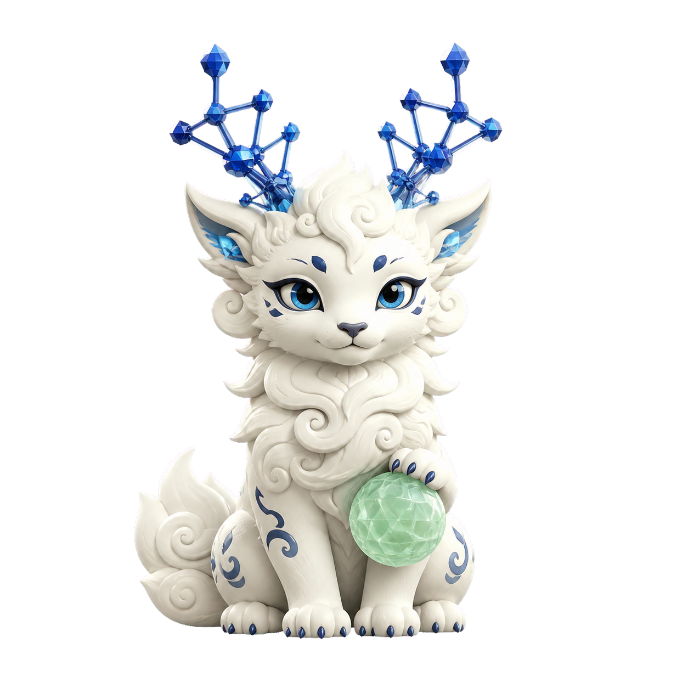

01 / 发现
文献洞察
检索并综合领域工作，建立研究脉络，定位值得回答的问题。
白泽 BaiZe 是一位面向材料研发的人工智能 Agent。它将研究者的提问转化为可追溯的科学路径，连接文献阅读、假设生成、实验设计与研究写作。

白泽将 Agent 推理、工具调用与研究技能连接为一条工作流，帮助材料研究者保留证据、假设与后续实验的来路。
检索并综合领域工作，建立研究脉络，定位值得回答的问题。
以可检查的证据形成清晰、可证伪的材料假设。
组织变量、对照与测量指标，使实验结果具备解释力。
将方法、数据与结论整理为报告、论文和可继续协作的项目资料。
未来的材料研发不应只是更快地产生文本或候选配方，而应让每一步推理都与数据、文献、实验约束和人的判断保持连接。
材料问题往往跨越配方、制备、表征与性能。BaiZe 的目标是持续保留问题背景、已有证据和未解决的不确定性，而不是把每轮对话当作孤立任务。
预测本身不是终点。更有价值的是将候选机制转化为可区分的实验、明确变量范围，并说明什么结果会支持或推翻一个假设。
文献笔记、数据分析、实验协议与论文草稿应彼此关联。BaiZe 希望让这些研究资产在本地项目中累积、可追溯，并能被团队继续使用。
我希望把材料研究中分散的文献、数据、推理与实验计划，组织成一条可以回看、审阅和继续推进的路径。
我目前是 Huawei Noah’s Ark Lab London Research Center 的 Research Scientist，研究人工智能如何帮助理解与发现材料，尤其关注晶体学、光谱学、图表示学习与贝叶斯优化。
做材料研究时，真正困难的往往不是得到一个答案，而是弄清它基于哪些证据、哪些假设仍待验证，以及下一步实验该如何设计。BaiZe 因此被设计为研究协作工具，而不是替代判断的黑箱。
它以本地优先的命令行方式运行，将文献笔记、假设、实验方案和写作材料沉淀在项目目录中，方便版本管理、复查与协作。
了解开源项目 ↗